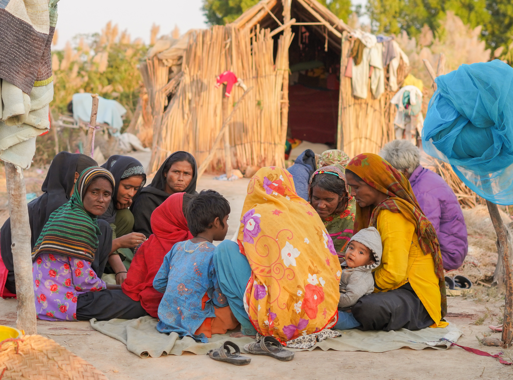

In the heart of Samarkand, under the vast Uzbek sky, the tomb of Baqi Baig stood quietly in 2025, reminding noble man from the 16th century. His tomb, built in 1640, he was the significant figure during the Timurid Empire. On a warm winter morning in 2025, a curious traveler named Saad Hussain stood near the monument, admiring the intricate architecture and wondering about the life of Baqi Baig. It was a place where time stood still, and history was both remembered and honored.

In 1640, the tomb of Baqi Baig in Samarkand became an eternal tribute to the Uzbek hero and military leader. [Photo by Saad Hussain/Bahria University]
By the 15th century, ornate rosettes and circular designs were being introduced into graves. More intricate patterns and Arabic calligraphy with biographical information about the burial body arose.

Arabic artwork at a decorated grave in Necropolis
The huge Necropolis of Makli is among the immense place of the world. At that place, the tomb of saints, governors, scholars, kings, queens and philosophers were buried. Their tombs were made with colorful bricks and yellow lime stone monuments, and even some were ornate with glazed tiles.

Huge Necropolis of Makli With Lots of Graveyard
Thatta, once the medieval capital of Sindh, boasts a rich and complex history marked by the influence of various dynasties. Initially ruled by the Samma dynasty, the city later came under the control of the Turkhan and Arghun kings before being incorporated into the Mughal Empire. During its zenith in the 16th and 17th centuries, Thatta flourished as a vibrant cultural hub, a significant port, and a revered center of learning, housing approximately 400 educational institutions. Thatta is famed for its necropolis, which occupies 10 km2 (3.9 sq mi) on the Makli Hill and took on a quasi-sacred aspect under Jam Nizam-ud-Din's reign.

Thatta is a place with turbulent history
Ghulam Nabi, who is 85 year old oral historian and guider of Thatta village. He is the person with bundle of information regarding mosques, tombs and various places in Thatta. He provide detail knowledge about each and every place to the visitors. He is the most down to earth person with zero ego and attitude. He assist every visitors kindly and as appreciation the visitors reward him money or food.

Ghulam Nabi, 85 year old, an oral historian of Thatta village
The old pillars, standing since the 1500s, continue to guard the place with quiet strength and resilience. These ancient structures have weathered centuries of storms, symbolizing the enduring connection between the past and present. Each stone, worn yet steadfast, tells a story of history, heritage, and protection. Their presence is a testament to the craftsmanship and the vision of those who built them to withstand time’s passage. These pillars are protecting the Mirza Jan Baba tomb.

These ancient pillars, built in the 1500s, still stand tall, protecting the place and its history.
Rashid Hussain was a beacon of hope in the poverty-stricken area of Halee Jheel, where his name was spoken with love and reverence. Regularly, he could be seen walking through the narrow, dusty lanes, carrying bags of food, clothes, and money for the poor. His generosity knew no bounds; he would visit the elderly, the sick, and the hungry, offering them not just material help, but comfort and care. The people of Halee Jheel called him a savior, as his kindness brought warmth to their hearts amidst their struggles. Rashid’s selfless acts reminded them that even in the darkest times, compassion could light the way.

Rashid Hussain: A symbol of hope and kindness in Halee Jheel, helping those in need with his caring heart.
In the peaceful waters of Halee Jheel, a pair of crocodiles swam, said to be from the 15th generation. They were the descendants of the first pair that were placed in the lake during Zia-ul-Haq’s time. Over the years, the crocodiles became a symbol of remembrance for him. People believed that as long as the crocodiles lived, Zia-ul-Haq's memory would stay alive. Each year, locals visited the lake, quietly remembering the past as they watched the ancient creatures glide through the water.

Generations of crocodiles in Halee Jheel: A symbol of remembrance for Zia-ul-Haq, passing through the years.
In the small village of Halee Jheel, life was hard for the fishermen, but they worked every day to catch fish from the nearby lakes. With old nets and tired hands, they caught fish like the shiny Hilsa, the strongCatla, and the smooth Rohu. After a long day, they packed the fish into baskets and took them to Gojja City in small carts, where people from Thatta, Hyderabad, and Badin came to buy fresh fish. Even though their work was tough, the fishermen knew it made the customers happy as they enjoyed the fresh fish. Their hard work showed how strong they were, even in difficult times.

Fishermen of Halee Jheel: Working hard every day to bring fresh fish to the people.
Munawar was a young boy from Halee Jheel who was eager to help when Rashid Hussain came to distribute food and supplies to those in need. His job was to set up the stove and cook meals, as many people in the area didn’t know how to cook over stones and wood. With quick hands and a kind heart, Munawar made sure everyone had a warm meal. After the work was done, Rashid’s family thanked him by giving him food and money for his help. Munawar felt proud, knowing that his small effort made a big difference.
Munawar: A boy in Halee Jheel who helped cook meals and was rewarded with kindness.
Ali Hassan lived in the poor village of Halee Jheel, where his family often had no food to eat. Despite his own hunger, Ali’s heart was full of kindness. Every day, he would share the little food he had with the hungry animals around him. People in the village were amazed at his generosity, as he showed that even in the hardest times, humanity and compassion can shine through. Ali’s actions inspired others to be kinder and more caring.
Ali Hassan: A boy in Halee Jheel who, despite his own hunger, set an example of kindness by feeding animals and showing true humanity.
Wasif Hussain, the son of Rashid Hussain, worked alongside his father to distribute food to those in need. As he handed out packed meals, people gathered around him with smiles, feeling comforted by his presence. Wasif’s kindness and hard work were making a real difference in their lives. His goal of helping humanity and reducing poverty was slowly becoming a reality, as more and more people felt hope in their hearts. With each meal he gave, Wasif knew he was bringing light into the lives of others.

Wasif Hussain: Following his father's footsteps, spreading hope and comfort to people through food, and working to reduce poverty in the community.
Razzak, a young boy from the village, walked up to Saad Hussain, the son of Rashid Hussain, and asked him to take a picture. It was the first time in many days he had a new dress, and he was proud to wear it. Though his mother had passed away when he was born, Razzak never complained, always thankful to Allah for the blessings he had. His face beamed with happiness, showing the world that true joy comes from within, no matter whatever the hardships is going on.

Razzak: A boy with a heart full of gratitude, shining with happiness in his new dress despite life's challenges.
Wasif Hussain, the son of Rashid Hussain, was known for his deep kindness and care. He did not only help the people of Halee Jheel, but he also made sure to feed the hungry animals around him. His face always reflected happiness as he gave food to both people and animals, showing his love and respect for all living beings. The people admired his compassion, and his actions made them believe in the goodness of humanity. Wasif's kindness was a shining example for everyone in the village.

Wasif Hussain: A young boy whose kindness, love, and respect for all living beings inspire others to believe in humanity.
Rehan Hussain, the son-in-law of Rashid Hussain, was busy distributing food (roti) to the people in need. As he handed out the warm bread, he noticed many children shivering in the cold without proper clothes. The winter winds made their situation even harder, and the poverty in the area was clear to see. Rehan felt a deep sense of responsibility to help, as he saw the struggle on their faces. His heart ached for the children, and he promised to do everything he could to ease their suffering.

Rehan Hussain: Giving food to those in need, seeing the tough reality of poverty as children suffer in the cold.
Bano, a young girl, was suffering from a high fever and shivering badly, but her hunger pushed her to leave the shelter tent. Despite her weakness, she made her way to get a piece of roti, knowing it was the only meal she would have for the day. Her face showed the pain and struggle she was going through, but her need for food was stronger than her sickness. Bano's helplessness was clear, as she fought to survive in the harsh conditions.

Bano: A young girl battling fever and hunger, her face reflecting the struggle for survival in difficult times.
Zeenat, the elder in her family, took care of everything after her mother-in-law passed away. She raised all her children with love and dedication. When Rashid Hussain’s family distributed sweaters, Zeenat made sure each member of her family got one that fit. Any extra sweaters that weren’t for her family, she gave away to others in need, showing no selfishness. Her actions reflected her selflessness and love for others.

Zeenat: A caring woman who looks after her family and shares with others, always putting others first.
In Halee Jheel, more than three or four families sat together, sharing a single plate of food without any fights or selfishness. Despite the tough times and poverty, the families enjoyed the meal in harmony, showing true brotherhood and kindness. Rashid Hussain and his family observed this act of unity, and it moved them deeply. The picture captured this beautiful moment, reflecting the spirit of togetherness in a time of hardship. It was a powerful reminder that even in the hardest times, kindness and unity can thrive.

Families sharing a meal in unity and kindness, showing true brotherhood in the face of hardship in Halee Jheel.
Safia, a young girl, sat with her mother as she tried to feed her a piece of roti. But at her age, she was not able to eat it properly. Her attention was caught by another girl nearby, drinking a glass of milk. Safia's hunger grew stronger, and she wished to drink the milk herself, but she couldn't. Her eyes reflected the helplessness and poverty she faced, feeling the struggle of wanting more but being unable to have it.
Safia: A hungry child, her eyes filled with helplessness as she watches another girl drinking milk she can't have.